배우기 전에 먼저 해 보세요. 틀려도 괜찮아요.
Am Sonntag wird nicht gebohrt.는 무슨 뜻일까요?
wird와 Partizip으로 규칙을 말해요.
Obwohl es regnet, gehe ich spazieren.에서 말하는 사람은 무엇을 하나요?
obwohl은 '~인데도'예요.
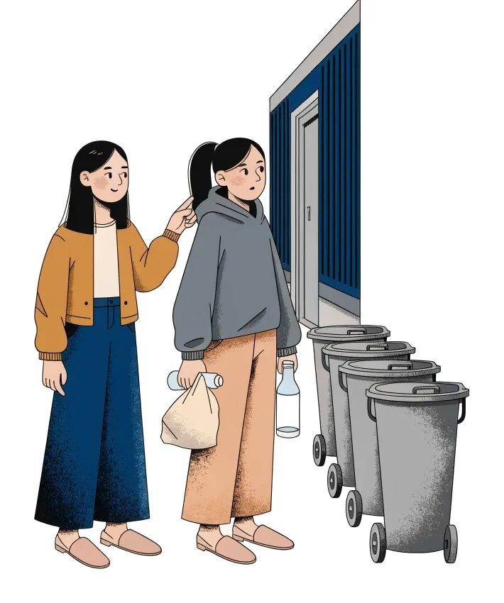
독일에서 지낸 시간이 길어지면 새로 온 사람에게 알려 줄 것이 많아져요. 쓰레기 분리, 빈 병 보증금, 조용히 해야 하는 시간은 처음에는 누구에게나 낯선 규칙이에요. 이 과에서는 규칙과 절차를 wird getrennt 같은 틀로 설명하고, deshalb, trotzdem, obwohl로 이유와 결과를 이어서 말해요.
문법 Passiv Präsens (wird getrennt), deshalb, trotzdem, obwohl
과제대학새로 온 유학생에게 생활 정보 알려 주기
과제직장새로 온 동료에게 회사 생활 규칙 알려 주기
이 과를 마치면 규칙과 절차를 설명하고, 한국과 독일을 견주고, 이유와 결과를 말할 수 있어요.
이 과에서 쓸 말이에요. 눌러서 먼저 들어 보세요.
배우기 전에 먼저 해 보세요. 틀려도 괜찮아요.
Am Sonntag wird nicht gebohrt.는 무슨 뜻일까요?
wird와 Partizip으로 규칙을 말해요.
Obwohl es regnet, gehe ich spazieren.에서 말하는 사람은 무엇을 하나요?
obwohl은 '~인데도'예요.
Lektion 5의 낱말 다섯 개를 다시 떠올려 보세요.
6월의 토요일 오전, 건물 뒤 마당이에요. 지난주에 같은 건물로 이사 온 유학생 Mai가 쓰레기통 앞에 서 있어요.
들으면서 찾아보세요. 유리병은 어디로 가져가나요?
월요일 아침, Kessler Technik이에요. 새 동료 Frau Demir가 오늘 첫 출근을 했어요. Dohyun이 회사를 안내해요.
들으면서 찾아보세요. 구내식당에서는 어떻게 계산하나요?
어학원의 이번 학기 마지막 수업이에요. Frau Becker가 Sora에게 독일 생활에 대해 물어요.
들으면서 찾아보세요. Sora는 왜 토요일에 장을 보나요?
세 대화를 듣고 답하세요.
프랑크푸르트에서 종이는 어느 통에 넣나요?
Glas wird im Hof gesammelt.
길모퉁이의 수거함에 가져가요.
보증금이 붙은 병은 어떻게 하나요?
회사 구내식당에서는 어떻게 계산하나요?
Im Team duzen sich die Kollegen.
회사에서 휴가는 언제 계획하나요?
Sora는 왜 토요일에 장을 보나요?
Sora findet die Mülltrennung kompliziert.
한국에서도 분리해서 새로운 일이 아니었어요.
낱말 51개예요. 낱말이나 예문 앞의 단추를 누르면 소리가 나요. 명사는 der, die, das를 색으로 구분했어요.
die Mülltrennung 쓰레기 분리
Die Mülltrennung ist nicht kompliziert.쓰레기 분리는 복잡하지 않아요.
trennen (hat getrennt) 나누다, 분리하다
Wir trennen den Müll.우리는 쓰레기를 분리해요.
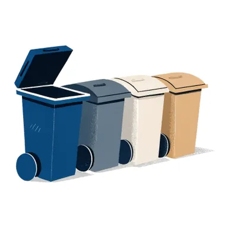
die Tonne, die Tonnen (큰 쓰레기) 통
Papier kommt in die grüne Tonne.종이는 초록 통에 넣어요.
der Restmüll 일반 쓰레기
Der Restmüll kommt in die graue Tonne.일반 쓰레기는 회색 통에 넣어요.
der Biomüll 음식물 쓰레기
Der Biomüll wird am Dienstag abgeholt.음식물 쓰레기는 화요일에 가져가요.
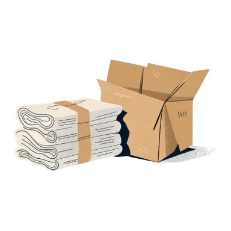
das Altpapier 폐지
Das Altpapier wird gesammelt.폐지는 모아요.
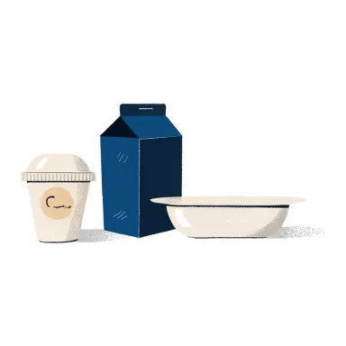
die Verpackung, die Verpackungen 포장재
Verpackungen kommen in die gelbe Tonne.포장재는 노란 통에 넣어요.
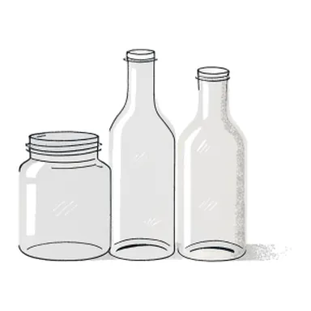
das Altglas 빈 유리병
Das Altglas wird zum Container gebracht.빈 유리병은 수거함에 가져가요.
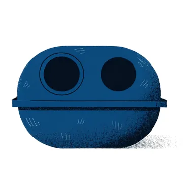
der Container, die Container 수거함
Der Container steht an der Ecke.수거함은 길모퉁이에 있어요.
das Pfand 보증금
Auf der Flasche ist Pfand.그 병에는 보증금이 붙어 있어요.
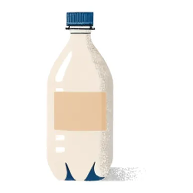
die Pfandflasche, die Pfandflaschen 보증금이 붙은 병
Ich bringe die Pfandflaschen zurück.보증금 병을 돌려주러 가요.
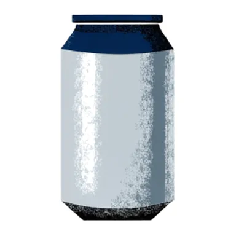
die Dose, die Dosen 캔
Auch Dosen haben Pfand.캔에도 보증금이 붙어 있어요.
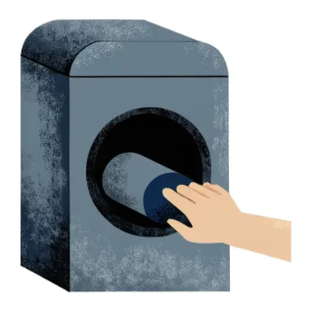
der Pfandautomat, die Pfandautomaten 빈 병을 넣는 기계
Der Pfandautomat steht am Eingang.빈 병을 넣는 기계는 입구에 있어요.
wegwerfen (du wirfst weg, hat weggeworfen) 버리다
Wirf die Flasche nicht weg!그 병을 버리지 마요!
sammeln (hat gesammelt) 모으다
Ich sammle die Flaschen in einer Tasche.저는 병을 가방에 모아요.
recyceln (hat recycelt) 재활용하다
Glas wird recycelt.유리는 재활용해요.
die Umwelt 환경
Das ist gut für die Umwelt.그건 환경에 좋아요.
die Ruhezeit, die Ruhezeiten 조용히 해야 하는 시간
In der Ruhezeit ist es leise im Haus.조용히 해야 하는 시간에는 건물 안이 조용해요.
die Nachtruhe 밤의 조용한 시간
Ab zehn Uhr abends ist Nachtruhe.밤 10시부터는 조용히 해야 해요.
der Feiertag, die Feiertage 공휴일
Am Feiertag sind die Geschäfte geschlossen.공휴일에는 가게가 문을 닫아요.
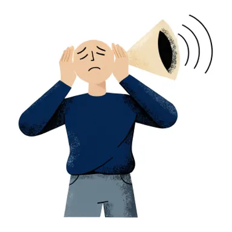
der Lärm 소음
Der Lärm stört die Nachbarn.소음은 이웃에게 방해가 돼요.
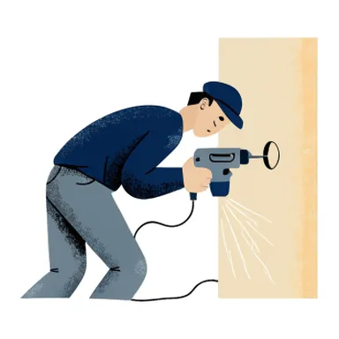
bohren (hat gebohrt) 구멍을 뚫다
Am Sonntag wird nicht gebohrt.일요일에는 구멍을 뚫지 않아요.
erlaubt 해도 되는
Grillen ist im Hof erlaubt.마당에서는 바비큐를 해도 돼요.
verboten 금지된
Rauchen ist hier verboten.여기서는 담배를 피우면 안 돼요.
sich an die Regeln halten 규칙을 지키다
Alle halten sich an die Regeln.모두 규칙을 지켜요.
üblich 흔한, 보통 그렇게 하는
Das ist in Deutschland üblich.독일에서는 보통 그렇게 해요.
sich gewöhnen an (hat sich gewöhnt) ~에 익숙해지다
Ich habe mich an den ruhigen Sonntag gewöhnt.조용한 일요일에 익숙해졌어요.
die Pünktlichkeit 시간을 지키는 것
Pünktlichkeit ist hier wichtig.여기서는 시간을 지키는 것이 중요해요.
die Arbeitszeit, die Arbeitszeiten 근무 시간
Die Arbeitszeit wird am Computer eingetragen.근무 시간은 컴퓨터에 적어요.
die Gleitzeit 탄력 근무제
Wir haben Gleitzeit.우리는 탄력 근무제예요.
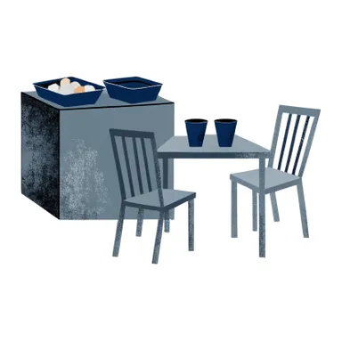
die Kantine, die Kantinen 구내식당
In der Kantine wird mit Karte bezahlt.구내식당에서는 카드로 내요.
die Mittagspause, die Mittagspausen 점심시간
Die Mittagspause ist um halb eins.점심시간은 12시 반이에요.
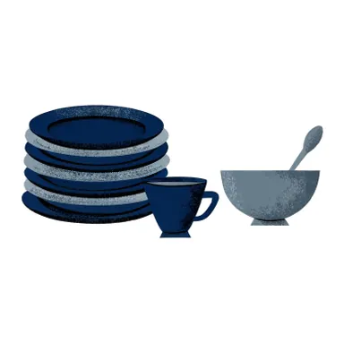
das Geschirr 그릇
Das Geschirr kommt in die Spülmaschine.그릇은 식기세척기에 넣어요.
duzen (hat geduzt) du라고 부르다
Im Team duzen wir uns.팀에서는 서로 du라고 불러요.
siezen (hat gesiezt) Sie라고 부르다
Die Kunden werden gesiezt.고객에게는 Sie라고 해요.
freinehmen (du nimmst frei, hat freigenommen) 휴가를 내다, 쉬다
Ich nehme am Freitag frei.저는 금요일에 쉬어요.
deshalb 그래서
Ich bin müde, deshalb bleibe ich zu Hause.피곤해요. 그래서 집에 있어요.
trotzdem 그래도
Es regnet, trotzdem gehe ich spazieren.비가 와요. 그래도 산책을 가요.
obwohl ~인데도
Ich gehe spazieren, obwohl es regnet.비가 오는데도 산책을 가요.
ähnlich 비슷한
Vieles ist ähnlich.비슷한 것이 많아요.
der Grund, die Gründe 이유
Was ist der Grund?이유가 뭐예요?
die Kultur, die Kulturen 문화
Ich interessiere mich für die deutsche Kultur.저는 독일 문화에 관심이 있어요.
typisch 전형적인
Das ist typisch deutsch.그건 정말 독일다워요.
überrascht 놀란
Am Anfang war ich überrascht.처음에는 놀랐어요.
vermissen (hat vermisst) 그리워하다
Ich vermisse das koreanische Essen.한국 음식이 그리워요.
sich wundern über (hat sich gewundert) ~을 이상하게 여기다
Ich habe mich über die vielen Tonnen gewundert.통이 많아서 이상하게 여겼어요.
das Heimweh 고향을 그리워하는 마음
Manchmal habe ich Heimweh.가끔 고향이 그리워요.
die Heimat 고향
Meine Heimat ist Korea.제 고향은 한국이에요.
kompliziert 복잡한
Das Formular ist kompliziert.그 서식은 복잡해요.
ernst 진지한
Er sieht ernst aus.그 사람은 진지해 보여요.
raten (du rätst, hat geraten) 조언하다
Was raten Sie mir?저한테 무슨 조언을 해 주시겠어요?
이 과의 낱말로 여덟 문제를 풀어요.
줄을 누르면 소리가 나요. 하나일 때는 wird, 여럿일 때는 werden을 써요.
줄을 누르면 소리가 나요. 같은 상황을 세 가지로 이어서 말해요.
규칙
누가 하는지가 중요하지 않거나 모두가 그렇게 하는 일은 werden과 Partizip II로 말해요. 이것을 Passiv라고 해요. 규칙과 절차를 설명할 때 많이 써요. werden은 주어에 맞추고, Partizip II는 문장 끝에 와요.
| 주어 | werden | 끝 |
|---|---|---|
| Der Müll | wird | getrennt. |
| Das Papier | wird | gesammelt. |
| Die Flaschen | werden | zurückgegeben. |
| Hier | wird | nicht geraucht. |
주의 같은 뜻을 man으로도 말할 수 있어요. Man trennt den Müll.과 Der Müll wird getrennt.는 같은 말이에요. 누가 하는지 말하고 싶으면 von을 써요. Der Müll wird von der Stadt abgeholt. 앞으로의 일을 말하는 werden과 헷갈리지 마세요. 끝에 Infinitiv가 오면 앞으로의 일이고, Partizip II가 오면 Passiv예요.
규칙을 보고 바로 확인해 보세요.
Die Kunden … immer gesiezt. 빈칸에 알맞은 말은 무엇인가요?
규칙
deshalb는 '그래서'예요. 앞 문장이 이유이고 deshalb 문장이 결과예요. deshalb가 문장 맨 앞에 오면 바로 뒤에 동사가 와요.
| 이유 | 결과 |
|---|---|
| Ich bin müde. | Deshalb bleibe ich zu Hause. |
| Es ist Nachtruhe. | Deshalb ist es leise. |
주의 weil과 견주어 보세요. weil 문장에는 이유가 오고 동사가 끝에 가요. deshalb 문장에는 결과가 오고 동사가 바로 뒤에 와요. Ich bleibe zu Hause, weil ich müde bin. Ich bin müde, deshalb bleibe ich zu Hause. 두 문장은 같은 뜻이에요.
규칙을 보고 바로 확인해 보세요.
Ich bin krank, deshalb … 뒤에 올 말은 무엇인가요?
규칙
둘 다 예상과 다른 일을 말해요. trotzdem은 '그래도'이고, 바로 뒤에 동사가 와요. obwohl은 '~인데도'이고, 동사가 문장 끝에 가요. obwohl 문장은 weil, dass, wenn 문장과 모양이 같아요.
| 낱말 | 뜻 | 동사 자리 |
|---|---|---|
| deshalb | 그래서 | 바로 뒤 |
| trotzdem | 그래도 | 바로 뒤 |
| weil | ~라서 | 맨 끝 |
| obwohl | ~인데도 | 맨 끝 |
주의 obwohl 문장이 앞에 오면 쉼표 다음에 바로 동사가 와요. Obwohl es regnet, gehe ich spazieren. 같은 뜻을 trotzdem으로도 말할 수 있어요. Es regnet, trotzdem gehe ich spazieren.
규칙을 보고 바로 확인해 보세요.
… ich müde bin, lerne ich noch eine Stunde. 빈칸에 알맞은 말은 무엇인가요?
듣고 알맞은 것을 고르세요.
음식물 쓰레기는 언제 가져가나요?
Der Biomüll wird am Dienstag abgeholt.
구내식당에서는 어떻게 내나요?
In der Kantine wird nur mit Karte bezahlt.
Sora는 무엇을 하나요?
Obwohl es regnet, gehe ich spazieren.
Lena는 왜 오늘 장을 보나요?
Am Sonntag sind die Geschäfte geschlossen, deshalb kaufe ich heute ein.
건물 관리인이 음성 메시지를 남겼어요. 듣고 알맞은 것을 고르세요.
Eine Nachricht vom Hausmeister
Hausmeister Guten Tag, hier ist Krüger, Ihr Hausmeister. Ich habe drei Informationen für alle im Haus.
Hausmeister Ab nächster Woche wird der Biomüll am Dienstag abgeholt und nicht mehr am Donnerstag.
Hausmeister Am Freitag werden die Fenster im Treppenhaus geputzt. Bitte stellen Sie deshalb nichts ins Treppenhaus.
Hausmeister Und am Samstag wird im Hof das Sommerfest gefeiert. Alle sind herzlich eingeladen!
Wann wird der Biomüll ab nächster Woche abgeholt?
금요일에는 무슨 일이 있나요?
Was wird am Samstag im Hof gemacht?
건물 생활 규칙이에요. 읽고, 맞으면 richtig, 틀리면 falsch를 고르세요.
Aus der Hausordnung
Von 22 Uhr bis 6 Uhr ist Nachtruhe. In dieser Zeit wird keine laute Musik gehört.
Am Sonntag und an Feiertagen wird nicht gebohrt.
Der Müll wird getrennt. Die Tonnen stehen im Hof.
Fahrräder werden in den Keller gestellt, nicht ins Treppenhaus.
Die Waschmaschinen im Keller werden von 7 Uhr bis 21 Uhr benutzt.
Grillen ist im Hof erlaubt. Auf dem Balkon ist es verboten.
Um 23 Uhr darf man laute Musik hören.
22시부터는 조용히 해야 해요.
Am Sonntag wird nicht gebohrt.
Fahrräder stehen im Treppenhaus.
지하실에 둬요.
Um 20 Uhr kann man noch Wäsche waschen.
21시까지 쓸 수 있어요.
Auf dem Balkon darf man grillen.
마당에서만 돼요.
wird와 werden 가운데 알맞은 것을 고르세요.
Der Müll getrennt.
쓰레기는 분리해요.
Die Flaschen im Supermarkt zurückgegeben.
병은 슈퍼마켓에 돌려줘요.
In der Kantine mit Karte bezahlt.
구내식당에서는 카드로 내요.
Die Kunden gesiezt.
고객에게는 Sie라고 해요.
Am Sonntag nicht gebohrt.
일요일에는 구멍을 뚫지 않아요.
Die Fenster am Freitag geputzt.
창문은 금요일에 닦아요.
괄호 안의 동사를 알맞은 모양으로 쓰세요.
Der Müll wird . (trennen)
쓰레기는 분리해요.
Das Altpapier wird . (sammeln)
폐지는 모아요.
Die Woche wird am Montag . (planen)
한 주는 월요일에 계획해요.
In der Kantine wird mit Karte . (bezahlen)
구내식당에서는 카드로 내요.
Die Flaschen werden . (zurückgeben)
병은 돌려줘요.
deshalb, trotzdem, obwohl 가운데 알맞은 것을 고르세요.
Am Sonntag sind die Geschäfte geschlossen, kaufe ich am Samstag ein.
일요일에는 가게가 닫아요. 그래서 토요일에 장을 봐요.
Es regnet, gehen wir spazieren.
비가 와요. 그래도 우리는 산책을 가요.
Ich gehe zur Arbeit, ich müde bin.
피곤한데도 일하러 가요.
Die Kantine ist teuer, essen viele dort.
구내식당은 비싸요. 그래도 거기서 먹는 사람이 많아요.
ich schon lange hier wohne, kenne ich nicht alle Regeln.
여기 산 지 오래됐는데도 규칙을 다 알지는 못해요.
Ich hatte Heimweh, habe ich meine Mutter angerufen.
고향이 그리웠어요. 그래서 어머니께 전화했어요.
낱말을 순서대로 눌러 문장을 만드세요.
독일에서는 쓰레기를 분리해요.
병은 슈퍼마켓에 돌려줘요.
피곤해요. 그래서 집에 있어요.
비가 와요. 그래도 산책을 가요.
비가 오는데도 산책을 가요.
서로 관계있는 말을 짝지으세요.
빈칸에 알맞은 낱말을 쓰세요.
Auf dieser Flasche ist .
이 병에는 보증금이 붙어 있어요.
Rauchen ist hier .
여기서는 담배를 피우면 안 돼요.
Im Team wir uns.
팀에서는 서로 du라고 불러요.
Manchmal habe ich .
가끔 고향이 그리워요.
듣고 그대로 써 보세요.
Der Müll wird getrennt. 쓰레기는 분리해요.
Deshalb brauchst du kein Bargeld. 그래서 현금은 필요 없어요.
Trotzdem gefällt mir das Leben hier. 그래도 여기 생활이 마음에 들어요.
Der Müll wird getrennt. 쓰레기는 분리해요.
Pfandflaschen werden im Supermarkt zurückgegeben. 보증금 병은 슈퍼마켓에 돌려줘요.
Ab zehn Uhr abends ist Nachtruhe. 밤 10시부터는 조용히 해야 해요.
Am Sonntag sind die Geschäfte geschlossen. 일요일에는 가게가 문을 닫아요.
Wir haben Gleitzeit. 우리는 탄력 근무제예요.
Die Arbeitszeit wird am Computer eingetragen. 근무 시간은 컴퓨터에 적어요.
Im Team duzen wir uns. 팀에서는 서로 du라고 불러요.
Am Montag wird die Woche geplant. 월요일에 한 주를 계획해요.
Deshalb kaufe ich am Samstag ein. 그래서 저는 토요일에 장을 봐요.
Trotzdem gefällt es mir hier. 그래도 저는 여기가 마음에 들어요.
Obwohl ich schon lange hier bin, lerne ich noch viel. 여기 온 지 오래됐는데도 아직 많이 배워요.
Das ist der Grund. 그게 이유예요.
In Korea ist das anders. 한국에서는 달라요.
Das ist ähnlich wie in Korea. 그건 한국과 비슷해요.
In Korea wird der Müll auch getrennt. 한국에서도 쓰레기를 분리해요.
Am Anfang war ich überrascht. 처음에는 놀랐어요.
Ich würde viel fragen. 저라면 많이 물어보겠어요.
Du solltest am Samstag einkaufen. 토요일에 장을 보는 게 좋아요.
Frag mich einfach! 그냥 저한테 물어봐요!
Das lernt man schnell. 금방 배워요.
과제 고르기
역할 대화와 말하기, 쓰기 과제는 대학 생활과 직장 생활 두 가지예요. 하나를 고르면 다음 과에서도 그쪽 과제가 나와요. 언제든 바꿀 수 있어요.
대화 A에서 역할을 하나 고르세요. 상대의 말은 음성으로 나오고, 내 차례에는 직접 말해요.
대화 B에서 역할을 하나 고르세요. 상대의 말은 음성으로 나오고, 내 차례에는 직접 말해요.
내 경험을 떠올리고 칸을 채우세요. 완성된 문장을 소리 내어 읽어 보세요.
Am Anfang war das neu für mich: der ruhige Sonntag.
Jetzt habe ich mich an die Mülltrennung gewöhnt.
Trotzdem vermisse ich das koreanische Essen.
Mein Tipp: Man sollte viel fragen.
나는 프랑크푸르트에서 공부한 지 1년이 됐어요. 이번 학기에 새로 온 유학생이 생활에 대해 물어요.
쓰레기는 종이, 포장재, 음식물, 나머지 네 가지로 나눠요. 보증금 병은 슈퍼마켓에 돌려줘요. 밤 10시부터는 조용히 해야 해요. 일요일에는 가게가 문을 닫아요. 학기 승차권으로 버스와 지하철을 탈 수 있어요.
새로 온 유학생이 물어요. 쪽지를 보고 답하세요. 질문을 듣고 소리 내어 답한 뒤 예시 답과 비교해 보세요.
Ich bin neu hier. Wie wird der Müll getrennt? 저는 새로 왔어요. 쓰레기는 어떻게 분리해요?
Es gibt vier Tonnen: für Papier, für Verpackungen, für Biomüll und für den Rest.
Und was mache ich mit den Flaschen? 병은 어떻게 해요?
Viele Flaschen haben Pfand. Sie werden im Supermarkt zurückgegeben.
Kann ich abends Musik hören? 저녁에 음악을 들어도 돼요?
Ja, aber ab zweiundzwanzig Uhr ist Nachtruhe. Dann sollte es leise sein.
Wann kann ich einkaufen? 장은 언제 볼 수 있어요?
Von Montag bis Samstag. Am Sonntag sind die Geschäfte geschlossen, deshalb kaufe ich am Samstag ein.
Brauche ich eine Fahrkarte für den Bus? 버스를 타려면 표가 있어야 해요?
Nein. Mit dem Semesterticket kannst du Bus und U-Bahn benutzen.
Tipps für neue Studierende
새로 온 유학생들에게 생활 정보를 알려 주는 글을 써 보세요. 여섯 문장이면 충분해요.
Liebe neue Studierende, herzlich willkommen in Frankfurt! Hier sind meine Tipps: Der Müll wird getrennt, deshalb gibt es im Hof vier Tonnen. Pfandflaschen werden im Supermarkt zurückgegeben. Am Sonntag sind die Geschäfte geschlossen, deshalb solltet ihr am Samstag einkaufen. Obwohl am Anfang alles neu ist, lernt man die Regeln schnell. Fragt einfach, wenn ihr etwas nicht versteht! Viele Grüße, Minji
다 쓴 뒤에 확인해 보세요.
나는 Kessler Technik에서 일한 지 1년이 넘었어요. 오늘 새 동료가 왔고, 회사 생활에 대해 물어요.
탄력 근무제라서 7시에서 9시 사이에 출근해요. 근무 시간은 컴퓨터에 적어요. 점심은 12시 반쯤 구내식당에서 먹고 카드로만 내요. 월요일 10시에 회의가 있어요. 팀에서는 du, 고객에게는 Sie라고 해요.
새로 온 동료가 물어요. 쪽지를 보고 답하세요. 질문을 듣고 소리 내어 답한 뒤 예시 답과 비교해 보세요.
Wann fängt man hier morgens an? 여기는 아침에 몇 시에 시작해요?
Wir haben Gleitzeit. Sie können zwischen sieben und neun Uhr kommen.
Und wie wird die Arbeitszeit notiert? 근무 시간은 어떻게 적어요?
Sie wird am Computer eingetragen.
Wo essen Sie zu Mittag? 점심은 어디에서 드세요?
In der Kantine, meistens um halb eins. Dort wird nur mit Karte bezahlt.
Gibt es feste Besprechungen? 정해진 회의가 있어요?
Ja, am Montag um zehn Uhr. Da wird die Woche geplant.
Sagt man hier du oder Sie? 여기서는 du라고 해요, Sie라고 해요?
Im Team duzen wir uns. Die Kunden werden trotzdem gesiezt.
Willkommen im Team
다음 주에 새로 오는 동료에게 회사 생활 규칙을 알려 주는 메일을 써 보세요. 여섯 문장이면 충분해요.
Liebe Frau Demir, herzlich willkommen im Team! Hier sind ein paar Informationen für Ihren ersten Tag: Wir haben Gleitzeit, deshalb können Sie zwischen 7 und 9 Uhr kommen. Die Arbeitszeit wird am Computer eingetragen. In der Kantine wird nur mit Karte bezahlt. Am Montag um 10 Uhr wird die Woche geplant. Im Team duzen wir uns, obwohl wir die Kunden siezen. Wenn Sie Fragen haben, helfe ich gern. Viele Grüße, Minji Choi
다 쓴 뒤에 확인해 보세요.
Ich kann Regeln im Haus und in der Firma erklären.건물과 회사의 규칙을 설명할 수 있어요.
Ich kann sagen, was in Korea und in Deutschland ähnlich oder anders ist.한국과 독일에서 무엇이 비슷하고 다른지 말할 수 있어요.
Ich kann Sätze mit deshalb, trotzdem und obwohl verbinden.deshalb, trotzdem, obwohl로 문장을 이을 수 있어요.
Ich kann neuen Leuten Tipps für das Leben in Deutschland geben.새로 온 사람에게 독일 생활에 대한 조언을 할 수 있어요.